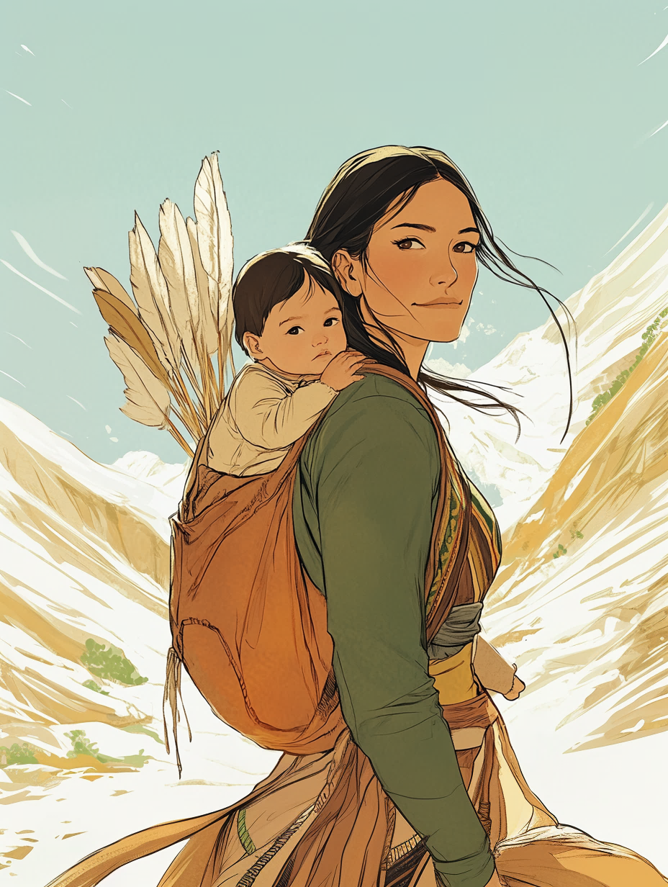

The Woman Who Led the Way
Exploration & Leadership
From the Dream Big, She Did series
The life of a young Shoshone woman who guided one of history's greatest expeditions.
Sacagawea was born in the rugged lands of present-day Idaho. Her people, the Lemhi Shoshone, were skilled travelers and survivors who followed the seasons to hunt, gather, and trade. From a young age, she learned to track, fish, and find healing plants.
At around twelve, Sacagawea's village was attacked by the Hidatsa, a rival tribe. She was kidnapped and taken far from her mountain home to a village near the Missouri River in present-day North Dakota. Her childhood ended that day.
The Corps of Discovery, led by Lewis and Clark, built Fort Mandan near Hidatsa villages. There, they hired Toussaint Charbonneau, a French-Canadian trapper, and his Shoshone wife Sacagawea for her language skills and knowledge of the land.
At seventeen, Sacagawea gave birth to a son, Jean Baptiste, nicknamed "Little Pomp" by Clark. Just weeks later, she carried him on her back as the expedition continued west. She was the only woman in the Corps of Discovery.
When a boat capsized on the Missouri River, Sacagawea acted quickly to rescue important supplies, tools, and Lewis and Clark's journals from the water. The captains were so impressed that they named a river after her.
When the expedition reached the Rocky Mountains, Sacagawea helped trade with the Shoshone for horses. By extraordinary chance, she was reunited with her brother, who had become their chief. The horses made it possible to cross the treacherous mountain trails.
After two years of travel, the expedition finally reached the Pacific Ocean. Sacagawea had crossed thousands of miles, serving as interpreter, diplomat, and guide. Her presence with a baby showed the tribes they met that the group came in peace.
Sacagawea became a role model for the women's suffrage movement and remains one of America's most celebrated historical figures. Her story is one of resilience, leadership, and the determination to overcome every obstacle.